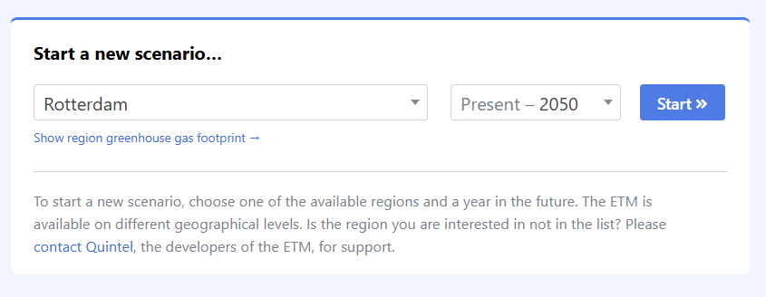

Exercises 2: Scenario modelling#
Exercise 1: “Reproducing household heating scenarios”#
This exercise helps you understand the basic ETM interface and scenario analysis workflow.
Your task is to recreate two heating scenarios similar to the tutorial using the ETM:
Set up the base scenario:
Open the II3050 National Leadership scenario for the Netherlands in 2050
Navigate to the household heating section
Document the initial network capacity requirements by adding the
Electricity network capacity and peakstable to your viewRecord the following metrics:
Network capacity change (GW)
Number of blackout hours
System cost changes
Chang the scenario (100% air heat pumps):
Modify the heating parameters so that we switch to 100% air heat pumps
Record the following metrics:
Network capacity change (GW)
Number of blackout hours
System cost changes
Write a brief summary comparing your results with those presented in the tutorial.
Exercise 2: “Analyzing system interactions in the ETM”#
This exercise develops your understanding of how different energy system components affect each other.
Investigate how different combinations of heating technologies and EV charging strategies affect system stability:
Starting from the II3050 National Leadership scenario , create three variations:
Variant 1: 50% electric boilers, 50% district heating, default EV charging
Variant 2: Your own combination targeting minimal grid impact and lower system costs
For both variants, analyze:
Grid stability indicators (blackout hours, network capacity)
System costs
Biomass import requirements
Write a short analysis that:
Explains the observed system interactions
Identifies unexpected effects
Recommends the most robust configuration
Exercise 3: “Designing a resilient Rotterdam energy system”#
This exercise helps you apply ETM analysis to real-world energy planning challenges.
Start a new scenario for the region of Rotterdam (see screenshot), you can type and search in the dropdown 
Use the ETM to develop two contrasting energy system configurations:
Configuration A: Maximize renewability of the energy-mix through deployment of renewable energy generation
Configuration B: Reduce emissions of the Rotterdam energy system by 50% (CO2 emissions relative to 1990) without using more than 150% import
Hint
For higher renewability, increase the deployed capacity of wind turbines in Supply > Renewable electricity > Wind turbines.
To effectively reduce emissions in the Rotterdam region, change the energy sources of industries Demand > Industry. This is 80% of the total energy demand.
For each configuration analyse:
Technical specifications for both configurations
Comparison of infrastructure requirements
Cost-benefit analysis
Recommendation with justification based on resilience, costs, and environmental impact